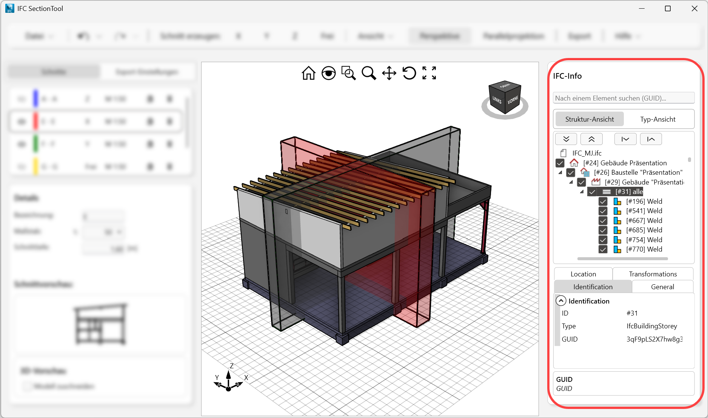
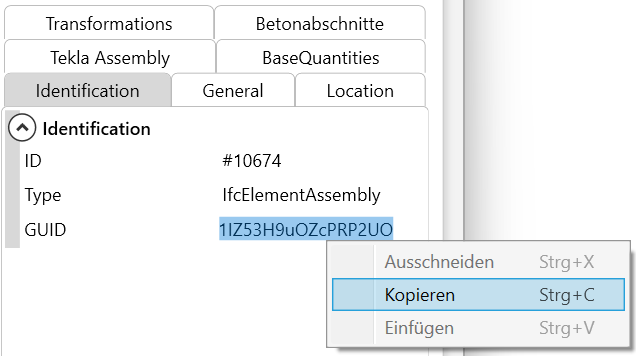
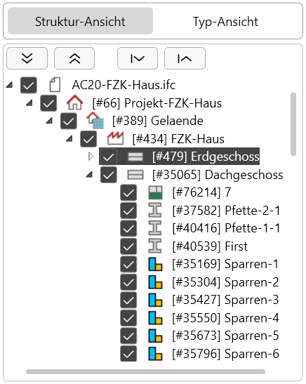
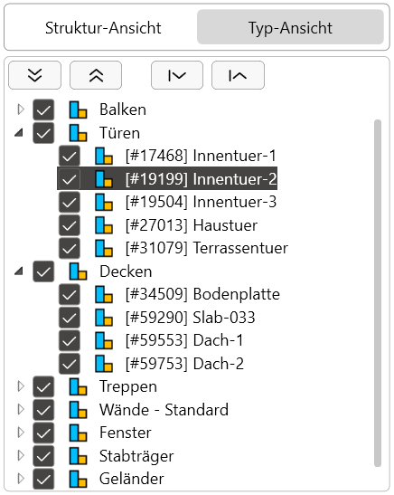
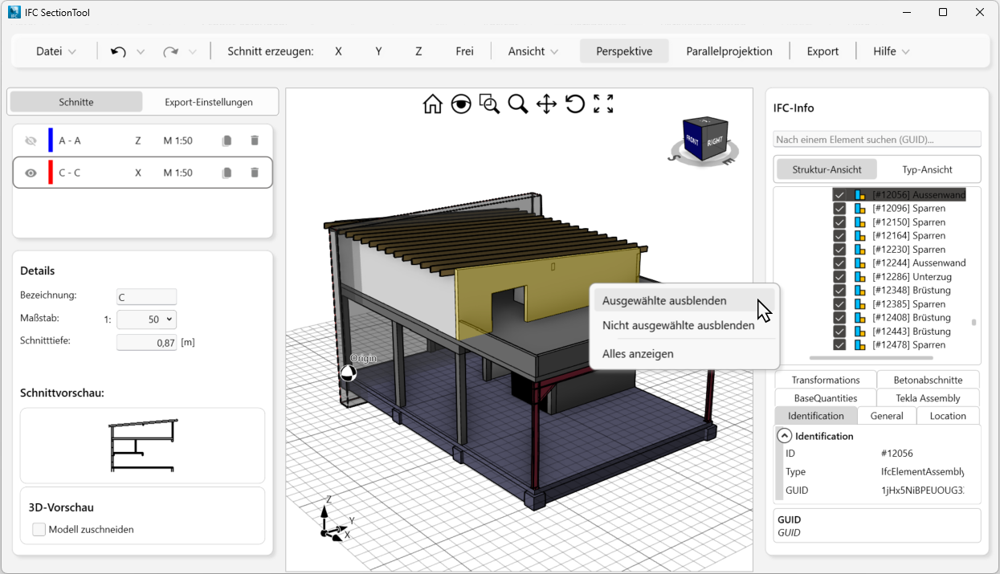

Sie können IFC-Objekte sowohl über die Ansichtsfilter Struktur-Ansicht und Typ-Ansicht als auch im Modellbereich ein- oder ausblenden, um die Sichtbarkeit von IFC-Objekten im Modellbereich steuern. Die Geometrie ausgeblendeter IFC-Objekte wird nicht nach ISBCAD übernommen. Sie haben zudem die Möglichkeit, nach bestimmten Objekten zu suchen.
 |
GUID-Suche
Nachdem Sie im Ansichtsfilter ein Objekt oder eine Objektgruppe ausgewählt haben, finden Sie die GUID im unteren Bereich auf der Registerkarte Identification. Über das Kontextmenü (Rechtsklick auf die GUID) können Sie die GUID kopieren und z. B. in ein Dokument einfügen, um sie später weiter verwenden zu können. Die Suchfunktion ermöglicht es Ihnen, das Objekt oder die Objektgruppe im Ansichtsfilter wiederzufinden, indem Sie nach der GUID suchen.
 |
Ansichtsfilter
Die Ansichtsfilter bieten Einblick in die Struktur der IFC-Datei mit den darin enthaltenen Objekten. Ein- oder ausgeblendete Objekte werden wechselseitig synchronisiert. Wenn Sie z. B. in Struktur-Ansicht ein Geschoss ausblenden, werden die zugehörigen Objekte auch in der Typ-Ansicht ausgeblendet.
Struktur-Ansicht Zeigt den hierarchischen Aufbau gemäß der Struktur der IFC-Datei an.  |
Typ-Ansicht Zeigt und klassifiziert IFC-Objekte nach ihren gemeinsamen Eigenschaften.  |
Objekte ein- und ausblenden
§Klicken Sie die Checkbox des IFC-Objekts an, das Sie ein- oder ausblenden wollen:
Status: IFC-Objekt (auch Unterknoten) ist ausgeblendet. Bei Klick werden alle Objekte (auch Unterknoten) eingeblendet. Der Status wechselt zu . |
|
Status: IFC-Objekt (auch Unterknoten) ist eingeblendet. Bei Klick werden alle Objekte (auch Unterknoten) ausgeblendet. Der Status wechselt zu . |
Knoten ein- und ausklappen
Klappt alle Knoten auf. |
|
Klappt alle Knoten ein. |
|
Klappt alle Knoten des markierten Knotens auf. |
|
Klappt alle Knoten des markierten Knotens ein. |
Objekte im Modellbereich ein- und ausblenden
§Klicken Sie im Modellbereich das IFC-Objekt an, das Sie ausblenden wollen. Das IFC-Objekt wird eingefärbt.
-Mit gedrückter Strg-Taste können Sie mehrere Objekte nacheinander auswählen.
-Im Ansichtsfilter wird das zuletzt angeklickte IFC-Objekt markiert.

§Rufen Sie das Kontextmenü mit Rechtsklick auf.
§Klicken einen der folgenden Einträge an:
·Ausgewählte ausblenden: Blendet die ausgewählten Objekte aus.
·Nicht ausgewählte ausblenden: Blendet alle Objekte aus, die nicht ausgewählt wurden.
·Alles anzeigen: Wenn Objekte ausgeblendet wurden, können sie hiermit wieder eingeblendet werden.
Zugehörige Aufgaben:
·Schnitt erzeugen und bearbeiten
Zugehörige Referenzen: